import os
from argparse import Namespace
from collections import Counter
import json
import re
import string
import numpy as np
import pandas as pd
import torch
import torch.nn as nn
from torch.nn import functional as F
from torch.nn.utils.rnn import pack_padded_sequence, pad_packed_sequence
import torch.optim as optim
from torch.utils.data import Dataset, DataLoader
from tqdm import tqdm_notebook
class Vocabulary(object):
"""Class to process text and extract vocabulary for mapping"""
def __init__(self, token_to_idx=None):
"""
Args:
token_to_idx (dict): a pre-existing map of tokens to indices
"""
if token_to_idx is None:
token_to_idx = {}
self._token_to_idx = token_to_idx
self._idx_to_token = {idx: token
for token, idx in self._token_to_idx.items()}
def to_serializable(self):
""" returns a dictionary that can be serialized """
return {'token_to_idx': self._token_to_idx}
@classmethod
def from_serializable(cls, contents):
""" instantiates the Vocabulary from a serialized dictionary """
return cls(**contents)
def add_token(self, token):
"""Update mapping dicts based on the token.
Args:
token (str): the item to add into the Vocabulary
Returns:
index (int): the integer corresponding to the token
"""
if token in self._token_to_idx:
index = self._token_to_idx[token]
else:
index = len(self._token_to_idx)
self._token_to_idx[token] = index
self._idx_to_token[index] = token
return index
def add_many(self, tokens):
"""Add a list of tokens into the Vocabulary
Args:
tokens (list): a list of string tokens
Returns:
indices (list): a list of indices corresponding to the tokens
"""
return [self.add_token(token) for token in tokens]
def lookup_token(self, token):
"""Retrieve the index associated with the token
Args:
token (str): the token to look up
Returns:
index (int): the index corresponding to the token
"""
return self._token_to_idx[token]
def lookup_index(self, index):
"""Return the token associated with the index
Args:
index (int): the index to look up
Returns:
token (str): the token corresponding to the index
Raises:
KeyError: if the index is not in the Vocabulary
"""
if index not in self._idx_to_token:
raise KeyError("the index (%d) is not in the Vocabulary" % index)
return self._idx_to_token[index]
def __str__(self):
return "<Vocabulary(size=%d)>" % len(self)
def __len__(self):
return len(self._token_to_idx)
class SequenceVocabulary(Vocabulary):
def __init__(self, token_to_idx=None, unk_token="<UNK>",
mask_token="<MASK>", begin_seq_token="<BEGIN>",
end_seq_token="<END>"):
super(SequenceVocabulary, self).__init__(token_to_idx)
self._mask_token = mask_token
self._unk_token = unk_token
self._begin_seq_token = begin_seq_token
self._end_seq_token = end_seq_token
self.mask_index = self.add_token(self._mask_token)
self.unk_index = self.add_token(self._unk_token)
self.begin_seq_index = self.add_token(self._begin_seq_token)
self.end_seq_index = self.add_token(self._end_seq_token)
def to_serializable(self):
contents = super(SequenceVocabulary, self).to_serializable()
contents.update({'unk_token': self._unk_token,
'mask_token': self._mask_token,
'begin_seq_token': self._begin_seq_token,
'end_seq_token': self._end_seq_token})
return contents
def lookup_token(self, token):
"""Retrieve the index associated with the token
or the UNK index if token isn't present.
Args:
token (str): the token to look up
Returns:
index (int): the index corresponding to the token
Notes:
`unk_index` needs to be >=0 (having been added into the Vocabulary)
for the UNK functionality
"""
if self.unk_index >= 0:
return self._token_to_idx.get(token, self.unk_index)
else:
return self._token_to_idx[token]
class NMTVectorizer(object):
""" The Vectorizer which coordinates the Vocabularies and puts them to use"""
def __init__(self, source_vocab, target_vocab, max_source_length, max_target_length):
"""
Args:
source_vocab (SequenceVocabulary): maps source words to integers
target_vocab (SequenceVocabulary): maps target words to integers
max_source_length (int): the longest sequence in the source dataset
max_target_length (int): the longest sequence in the target dataset
"""
self.source_vocab = source_vocab
self.target_vocab = target_vocab
self.max_source_length = max_source_length
self.max_target_length = max_target_length
def _vectorize(self, indices, vector_length=-1, mask_index=0):
"""Vectorize the provided indices
Args:
indices (list): a list of integers that represent a sequence
vector_length (int): an argument for forcing the length of index vector
mask_index (int): the mask_index to use; almost always 0
"""
if vector_length < 0:
vector_length = len(indices)
vector = np.zeros(vector_length, dtype=np.int64)
vector[:len(indices)] = indices
vector[len(indices):] = mask_index
return vector
def _get_source_indices(self, text):
"""Return the vectorized source text
Args:
text (str): the source text; tokens should be separated by spaces
Returns:
indices (list): list of integers representing the text
"""
indices = [self.source_vocab.begin_seq_index]
indices.extend(self.source_vocab.lookup_token(token) for token in text.split(" "))
indices.append(self.source_vocab.end_seq_index)
return indices
def _get_target_indices(self, text):
"""Return the vectorized source text
Args:
text (str): the source text; tokens should be separated by spaces
Returns:
a tuple: (x_indices, y_indices)
x_indices (list): list of integers representing the observations in target decoder
y_indices (list): list of integers representing predictions in target decoder
"""
indices = [self.target_vocab.lookup_token(token) for token in text.split(" ")]
x_indices = [self.target_vocab.begin_seq_index] + indices
y_indices = indices + [self.target_vocab.end_seq_index]
return x_indices, y_indices
def vectorize(self, source_text, target_text, use_dataset_max_lengths=True):
"""Return the vectorized source and target text
The vetorized source text is just the a single vector.
The vectorized target text is split into two vectors in a similar style to
the surname modeling in Chapter 7.
At each timestep, the first vector is the observation and the second vector is the target.
Args:
source_text (str): text from the source language
target_text (str): text from the target language
use_dataset_max_lengths (bool): whether to use the global max vector lengths
Returns:
The vectorized data point as a dictionary with the keys:
source_vector, target_x_vector, target_y_vector, source_length
"""
source_vector_length = -1
target_vector_length = -1
if use_dataset_max_lengths:
source_vector_length = self.max_source_length + 2
target_vector_length = self.max_target_length + 1
source_indices = self._get_source_indices(source_text)
source_vector = self._vectorize(source_indices,
vector_length=source_vector_length,
mask_index=self.source_vocab.mask_index)
target_x_indices, target_y_indices = self._get_target_indices(target_text)
target_x_vector = self._vectorize(target_x_indices,
vector_length=target_vector_length,
mask_index=self.target_vocab.mask_index)
target_y_vector = self._vectorize(target_y_indices,
vector_length=target_vector_length,
mask_index=self.target_vocab.mask_index)
return {"source_vector": source_vector,
"target_x_vector": target_x_vector,
"target_y_vector": target_y_vector,
"source_length": len(source_indices)}
@classmethod
def from_dataframe(cls, bitext_df):
"""Instantiate the vectorizer from the dataset dataframe
Args:
bitext_df (pandas.DataFrame): the parallel text dataset
Returns:
an instance of the NMTVectorizer
"""
source_vocab = SequenceVocabulary()
target_vocab = SequenceVocabulary()
max_source_length = 0
max_target_length = 0
for _, row in bitext_df.iterrows():
source_tokens = row["source_language"].split(" ")
if len(source_tokens) > max_source_length:
max_source_length = len(source_tokens)
for token in source_tokens:
source_vocab.add_token(token)
target_tokens = row["target_language"].split(" ")
if len(target_tokens) > max_target_length:
max_target_length = len(target_tokens)
for token in target_tokens:
target_vocab.add_token(token)
return cls(source_vocab, target_vocab, max_source_length, max_target_length)
@classmethod
def from_serializable(cls, contents):
source_vocab = SequenceVocabulary.from_serializable(contents["source_vocab"])
target_vocab = SequenceVocabulary.from_serializable(contents["target_vocab"])
return cls(source_vocab=source_vocab,
target_vocab=target_vocab,
max_source_length=contents["max_source_length"],
max_target_length=contents["max_target_length"])
def to_serializable(self):
return {"source_vocab": self.source_vocab.to_serializable(),
"target_vocab": self.target_vocab.to_serializable(),
"max_source_length": self.max_source_length,
"max_target_length": self.max_target_length}
class NMTDataset(Dataset):
def __init__(self, text_df, vectorizer):
"""
Args:
surname_df (pandas.DataFrame): the dataset
vectorizer (SurnameVectorizer): vectorizer instatiated from dataset
"""
self.text_df = text_df
self._vectorizer = vectorizer
self.train_df = self.text_df[self.text_df.split=='train']
self.train_size = len(self.train_df)
self.val_df = self.text_df[self.text_df.split=='val']
self.validation_size = len(self.val_df)
self.test_df = self.text_df[self.text_df.split=='test']
self.test_size = len(self.test_df)
self._lookup_dict = {'train': (self.train_df, self.train_size),
'val': (self.val_df, self.validation_size),
'test': (self.test_df, self.test_size)}
self.set_split('train')
@classmethod
def load_dataset_and_make_vectorizer(cls, dataset_csv):
"""Load dataset and make a new vectorizer from scratch
Args:
surname_csv (str): location of the dataset
Returns:
an instance of SurnameDataset
"""
text_df = pd.read_csv(dataset_csv)
train_subset = text_df[text_df.split=='train']
return cls(text_df, NMTVectorizer.from_dataframe(train_subset))
@classmethod
def load_dataset_and_load_vectorizer(cls, dataset_csv, vectorizer_filepath):
"""Load dataset and the corresponding vectorizer.
Used in the case in the vectorizer has been cached for re-use
Args:
surname_csv (str): location of the dataset
vectorizer_filepath (str): location of the saved vectorizer
Returns:
an instance of SurnameDataset
"""
text_df = pd.read_csv(dataset_csv)
vectorizer = cls.load_vectorizer_only(vectorizer_filepath)
return cls(text_df, vectorizer)
@staticmethod
def load_vectorizer_only(vectorizer_filepath):
"""a static method for loading the vectorizer from file
Args:
vectorizer_filepath (str): the location of the serialized vectorizer
Returns:
an instance of SurnameVectorizer
"""
with open(vectorizer_filepath) as fp:
return NMTVectorizer.from_serializable(json.load(fp))
def save_vectorizer(self, vectorizer_filepath):
"""saves the vectorizer to disk using json
Args:
vectorizer_filepath (str): the location to save the vectorizer
"""
with open(vectorizer_filepath, "w") as fp:
json.dump(self._vectorizer.to_serializable(), fp)
def get_vectorizer(self):
""" returns the vectorizer """
return self._vectorizer
def set_split(self, split="train"):
self._target_split = split
self._target_df, self._target_size = self._lookup_dict[split]
def __len__(self):
return self._target_size
def __getitem__(self, index):
"""the primary entry point method for PyTorch datasets
Args:
index (int): the index to the data point
Returns:
a dictionary holding the data point: (x_data, y_target, class_index)
"""
row = self._target_df.iloc[index]
vector_dict = self._vectorizer.vectorize(row.source_language, row.target_language)
return {"x_source": vector_dict["source_vector"],
"x_target": vector_dict["target_x_vector"],
"y_target": vector_dict["target_y_vector"],
"x_source_length": vector_dict["source_length"]}
def get_num_batches(self, batch_size):
"""Given a batch size, return the number of batches in the dataset
Args:
batch_size (int)
Returns:
number of batches in the dataset
"""
return len(self) // batch_size
def generate_nmt_batches(dataset, batch_size, shuffle=True,
drop_last=True, device="cpu"):
"""A generator function which wraps the PyTorch DataLoader. The NMT Version """
dataloader = DataLoader(dataset=dataset, batch_size=batch_size,
shuffle=shuffle, drop_last=drop_last)
for data_dict in dataloader:
lengths = data_dict['x_source_length'].numpy()
sorted_length_indices = lengths.argsort()[::-1].tolist()
out_data_dict = {}
for name, tensor in data_dict.items():
out_data_dict[name] = data_dict[name][sorted_length_indices].to(device)
yield out_data_dict
4. Neural Machine Translation Model¶
Components:
NMTEncoder
accepts as input a source sequence to be embedded and fed through a bi-directional GRU
NMTDecoder
using the encoder state and attention, the decoder generates a new sequence
the ground truth target sequence is used as input to the decoder at each time step
an alternative formulation would allow some of the decoder’s own choices to be used as input
this is referred to as curriculum learning, learning to search
TODO: Look up references for this. I believe Bengio has a paper from the image captioning competitions. Hal Daume has tons on this and is the main NLP guy for it.
NMTModel
Combines the encoder and decoder into a single class.
class NMTEncoder(nn.Module):
def __init__(self, num_embeddings, embedding_size, rnn_hidden_size):
"""
Args:
num_embeddings (int): number of embeddings is the size of source vocabulary
embedding_size (int): size of the embedding vectors
rnn_hidden_size (int): size of the RNN hidden state vectors
"""
super(NMTEncoder, self).__init__()
self.source_embedding = nn.Embedding(num_embeddings, embedding_size, padding_idx=0)
self.birnn = nn.GRU(embedding_size, rnn_hidden_size, bidirectional=True, batch_first=True)
def forward(self, x_source, x_lengths):
"""The forward pass of the model
Args:
x_source (torch.Tensor): the input data tensor.
x_source.shape is (batch, seq_size)
x_lengths (torch.Tensor): a vector of lengths for each item in the batch
Returns:
a tuple: x_unpacked (torch.Tensor), x_birnn_h (torch.Tensor)
x_unpacked.shape = (batch, seq_size, rnn_hidden_size * 2)
x_birnn_h.shape = (batch, rnn_hidden_size * 2)
"""
x_embedded = self.source_embedding(x_source)
# create PackedSequence; x_packed.data.shape=(number_items, embeddign_size)
x_packed = pack_padded_sequence(x_embedded, x_lengths.detach().cpu().numpy(),
batch_first=True)
# x_birnn_h.shape = (num_rnn, batch_size, feature_size)
x_birnn_out, x_birnn_h = self.birnn(x_packed)
# permute to (batch_size, num_rnn, feature_size)
x_birnn_h = x_birnn_h.permute(1, 0, 2)
# flatten features; reshape to (batch_size, num_rnn * feature_size)
# (recall: -1 takes the remaining positions,
# flattening the two RNN hidden vectors into 1)
x_birnn_h = x_birnn_h.contiguous().view(x_birnn_h.size(0), -1)
x_unpacked, _ = pad_packed_sequence(x_birnn_out, batch_first=True)
return x_unpacked, x_birnn_h
def verbose_attention(encoder_state_vectors, query_vector):
"""A descriptive version of the neural attention mechanism
Args:
encoder_state_vectors (torch.Tensor): 3dim tensor from bi-GRU in encoder
query_vector (torch.Tensor): hidden state in decoder GRU
Returns:
"""
batch_size, num_vectors, vector_size = encoder_state_vectors.size()
vector_scores = torch.sum(encoder_state_vectors * query_vector.view(batch_size, 1, vector_size),
dim=2)
vector_probabilities = F.softmax(vector_scores, dim=1)
weighted_vectors = encoder_state_vectors * vector_probabilities.view(batch_size, num_vectors, 1)
context_vectors = torch.sum(weighted_vectors, dim=1)
return context_vectors, vector_probabilities, vector_scores
def terse_attention(encoder_state_vectors, query_vector):
"""A shorter and more optimized version of the neural attention mechanism
Args:
encoder_state_vectors (torch.Tensor): 3dim tensor from bi-GRU in encoder
query_vector (torch.Tensor): hidden state
"""
vector_scores = torch.matmul(encoder_state_vectors, query_vector.unsqueeze(dim=2)).squeeze()
vector_probabilities = F.softmax(vector_scores, dim=-1)
context_vectors = torch.matmul(encoder_state_vectors.transpose(-2, -1),
vector_probabilities.unsqueeze(dim=2)).squeeze()
return context_vectors, vector_probabilities
class NMTDecoder(nn.Module):
def __init__(self, num_embeddings, embedding_size, rnn_hidden_size, bos_index):
"""
Args:
num_embeddings (int): number of embeddings is also the number of
unique words in target vocabulary
embedding_size (int): the embedding vector size
rnn_hidden_size (int): size of the hidden rnn state
bos_index(int): begin-of-sequence index
"""
super(NMTDecoder, self).__init__()
self._rnn_hidden_size = rnn_hidden_size
self.target_embedding = nn.Embedding(num_embeddings=num_embeddings,
embedding_dim=embedding_size,
padding_idx=0)
self.gru_cell = nn.GRUCell(embedding_size + rnn_hidden_size,
rnn_hidden_size)
self.hidden_map = nn.Linear(rnn_hidden_size, rnn_hidden_size)
self.classifier = nn.Linear(rnn_hidden_size * 2, num_embeddings)
self.bos_index = bos_index
def _init_indices(self, batch_size):
""" return the BEGIN-OF-SEQUENCE index vector """
return torch.ones(batch_size, dtype=torch.int64) * self.bos_index
def _init_context_vectors(self, batch_size):
""" return a zeros vector for initializing the context """
return torch.zeros(batch_size, self._rnn_hidden_size)
def forward(self, encoder_state, initial_hidden_state, target_sequence):
"""The forward pass of the model
Args:
encoder_state (torch.Tensor): the output of the NMTEncoder
initial_hidden_state (torch.Tensor): The last hidden state in the NMTEncoder
target_sequence (torch.Tensor): the target text data tensor
Returns:
output_vectors (torch.Tensor): prediction vectors at each output step
"""
# We are making an assumption there: The batch is on first
# The input is (Batch, Seq)
# We want to iterate over sequence so we permute it to (S, B)
target_sequence = target_sequence.permute(1, 0)
output_sequence_size = target_sequence.size(0)
# use the provided encoder hidden state as the initial hidden state
h_t = self.hidden_map(initial_hidden_state)
batch_size = encoder_state.size(0)
# initialize context vectors to zeros
context_vectors = self._init_context_vectors(batch_size)
# initialize first y_t word as BOS
y_t_index = self._init_indices(batch_size)
h_t = h_t.to(encoder_state.device)
y_t_index = y_t_index.to(encoder_state.device)
context_vectors = context_vectors.to(encoder_state.device)
output_vectors = []
self._cached_p_attn = []
self._cached_ht = []
self._cached_decoder_state = encoder_state.cpu().detach().numpy()
for i in range(output_sequence_size):
y_t_index = target_sequence[i]
# Step 1: Embed word and concat with previous context
y_input_vector = self.target_embedding(y_t_index)
rnn_input = torch.cat([y_input_vector, context_vectors], dim=1)
# Step 2: Make a GRU step, getting a new hidden vector
h_t = self.gru_cell(rnn_input, h_t)
self._cached_ht.append(h_t.cpu().detach().numpy())
# Step 3: Use the current hidden to attend to the encoder state
context_vectors, p_attn, _ = verbose_attention(encoder_state_vectors=encoder_state,
query_vector=h_t)
# auxillary: cache the attention probabilities for visualization
self._cached_p_attn.append(p_attn.cpu().detach().numpy())
# Step 4: Use the current hidden and context vectors to make a prediction to the next word
prediction_vector = torch.cat((context_vectors, h_t), dim=1)
score_for_y_t_index = self.classifier(F.dropout(prediction_vector, 0.3))
# auxillary: collect the prediction scores
output_vectors.append(score_for_y_t_index)
output_vectors = torch.stack(output_vectors).permute(1, 0, 2)
return output_vectors
class NMTModel(nn.Module):
""" The Neural Machine Translation Model """
def __init__(self, source_vocab_size, source_embedding_size,
target_vocab_size, target_embedding_size, encoding_size,
target_bos_index):
"""
Args:
source_vocab_size (int): number of unique words in source language
source_embedding_size (int): size of the source embedding vectors
target_vocab_size (int): number of unique words in target language
target_embedding_size (int): size of the target embedding vectors
encoding_size (int): the size of the encoder RNN.
"""
super(NMTModel, self).__init__()
self.encoder = NMTEncoder(num_embeddings=source_vocab_size,
embedding_size=source_embedding_size,
rnn_hidden_size=encoding_size)
decoding_size = encoding_size * 2
self.decoder = NMTDecoder(num_embeddings=target_vocab_size,
embedding_size=target_embedding_size,
rnn_hidden_size=decoding_size,
bos_index=target_bos_index)
def forward(self, x_source, x_source_lengths, target_sequence):
"""The forward pass of the model
Args:
x_source (torch.Tensor): the source text data tensor.
x_source.shape should be (batch, vectorizer.max_source_length)
x_source_lengths torch.Tensor): the length of the sequences in x_source
target_sequence (torch.Tensor): the target text data tensor
Returns:
decoded_states (torch.Tensor): prediction vectors at each output step
"""
encoder_state, final_hidden_states = self.encoder(x_source, x_source_lengths)
decoded_states = self.decoder(encoder_state=encoder_state,
initial_hidden_state=final_hidden_states,
target_sequence=target_sequence)
return decoded_states
5. Training Routine and Bookkeeping Functions¶
def set_seed_everywhere(seed, cuda):
np.random.seed(seed)
torch.manual_seed(seed)
if cuda:
torch.cuda.manual_seed_all(seed)
def handle_dirs(dirpath):
if not os.path.exists(dirpath):
os.makedirs(dirpath)
def make_train_state(args):
return {'stop_early': False,
'early_stopping_step': 0,
'early_stopping_best_val': 1e8,
'learning_rate': args.learning_rate,
'epoch_index': 0,
'train_loss': [],
'train_acc': [],
'val_loss': [],
'val_acc': [],
'test_loss': -1,
'test_acc': -1,
'model_filename': args.model_state_file}
def update_train_state(args, model, train_state):
"""Handle the training state updates.
Components:
- Early Stopping: Prevent overfitting.
- Model Checkpoint: Model is saved if the model is better
:param args: main arguments
:param model: model to train
:param train_state: a dictionary representing the training state values
:returns:
a new train_state
"""
# Save one model at least
if train_state['epoch_index'] == 0:
torch.save(model.state_dict(), train_state['model_filename'])
train_state['stop_early'] = False
# Save model if performance improved
elif train_state['epoch_index'] >= 1:
loss_tm1, loss_t = train_state['val_loss'][-2:]
# If loss worsened
if loss_t >= loss_tm1:
# Update step
train_state['early_stopping_step'] += 1
# Loss decreased
else:
# Save the best model
if loss_t < train_state['early_stopping_best_val']:
torch.save(model.state_dict(), train_state['model_filename'])
train_state['early_stopping_best_val'] = loss_t
# Reset early stopping step
train_state['early_stopping_step'] = 0
# Stop early ?
train_state['stop_early'] = \
train_state['early_stopping_step'] >= args.early_stopping_criteria
return train_state
def normalize_sizes(y_pred, y_true):
"""Normalize tensor sizes
Args:
y_pred (torch.Tensor): the output of the model
If a 3-dimensional tensor, reshapes to a matrix
y_true (torch.Tensor): the target predictions
If a matrix, reshapes to be a vector
"""
if len(y_pred.size()) == 3:
y_pred = y_pred.contiguous().view(-1, y_pred.size(2))
if len(y_true.size()) == 2:
y_true = y_true.contiguous().view(-1)
return y_pred, y_true
def compute_accuracy(y_pred, y_true, mask_index):
y_pred, y_true = normalize_sizes(y_pred, y_true)
_, y_pred_indices = y_pred.max(dim=1)
correct_indices = torch.eq(y_pred_indices, y_true).float()
valid_indices = torch.ne(y_true, mask_index).float()
n_correct = (correct_indices * valid_indices).sum().item()
n_valid = valid_indices.sum().item()
return n_correct / n_valid * 100
def sequence_loss(y_pred, y_true, mask_index):
y_pred, y_true = normalize_sizes(y_pred, y_true)
return F.cross_entropy(y_pred, y_true, ignore_index=mask_index)
args = Namespace(dataset_csv="data/nmt/simplest_eng_fra.csv",
vectorizer_file="vectorizer.json",
model_state_file="model.pth",
save_dir="model_storage/ch8/nmt_luong_no_sampling",
reload_from_files=True,
expand_filepaths_to_save_dir=True,
cuda=False,
seed=1337,
learning_rate=5e-4,
batch_size=64,
num_epochs=100,
early_stopping_criteria=5,
source_embedding_size=64,
target_embedding_size=64,
encoding_size=64,
catch_keyboard_interrupt=True)
if args.expand_filepaths_to_save_dir:
args.vectorizer_file = os.path.join(args.save_dir,
args.vectorizer_file)
args.model_state_file = os.path.join(args.save_dir,
args.model_state_file)
print("Expanded filepaths: ")
print("\t{}".format(args.vectorizer_file))
print("\t{}".format(args.model_state_file))
# Check CUDA
if not torch.cuda.is_available():
args.cuda = False
args.device = torch.device("cuda" if args.cuda else "cpu")
print("Using CUDA: {}".format(args.cuda))
# Set seed for reproducibility
set_seed_everywhere(args.seed, args.cuda)
# handle dirs
handle_dirs(args.save_dir)
Expanded filepaths:
model_storage/ch8/nmt_luong_no_sampling/vectorizer.json
model_storage/ch8/nmt_luong_no_sampling/model.pth
Using CUDA: False
if args.reload_from_files and os.path.exists(args.vectorizer_file):
# training from a checkpoint
dataset = NMTDataset.load_dataset_and_load_vectorizer(args.dataset_csv,
args.vectorizer_file)
else:
# create dataset and vectorizer
dataset = NMTDataset.load_dataset_and_make_vectorizer(args.dataset_csv)
dataset.save_vectorizer(args.vectorizer_file)
vectorizer = dataset.get_vectorizer()
model = NMTModel(source_vocab_size=len(vectorizer.source_vocab),
source_embedding_size=args.source_embedding_size,
target_vocab_size=len(vectorizer.target_vocab),
target_embedding_size=args.target_embedding_size,
encoding_size=args.encoding_size,
target_bos_index=vectorizer.target_vocab.begin_seq_index)
if args.reload_from_files and os.path.exists(args.model_state_file):
model.load_state_dict(torch.load(args.model_state_file))
print("Reloaded model")
else:
print("New model")
New model
model = model.to(args.device)
optimizer = optim.Adam(model.parameters(), lr=args.learning_rate)
scheduler = optim.lr_scheduler.ReduceLROnPlateau(optimizer=optimizer,
mode='min', factor=0.5,
patience=1)
mask_index = vectorizer.target_vocab.mask_index
train_state = make_train_state(args)
epoch_bar = tqdm_notebook(desc='training routine',
total=args.num_epochs,
position=0)
dataset.set_split('train')
train_bar = tqdm_notebook(desc='split=train',
total=dataset.get_num_batches(args.batch_size),
position=1,
leave=True)
dataset.set_split('val')
val_bar = tqdm_notebook(desc='split=val',
total=dataset.get_num_batches(args.batch_size),
position=1,
leave=True)
try:
for epoch_index in range(args.num_epochs):
train_state['epoch_index'] = epoch_index
# Iterate over training dataset
# setup: batch generator, set loss and acc to 0, set train mode on
dataset.set_split('train')
batch_generator = generate_nmt_batches(dataset,
batch_size=args.batch_size,
device=args.device)
running_loss = 0.0
running_acc = 0.0
model.train()
for batch_index, batch_dict in enumerate(batch_generator):
# the training routine is these 5 steps:
# --------------------------------------
# step 1. zero the gradients
optimizer.zero_grad()
# step 2. compute the output
y_pred = model(batch_dict['x_source'],
batch_dict['x_source_length'],
batch_dict['x_target'])
# step 3. compute the loss
loss = sequence_loss(y_pred, batch_dict['y_target'], mask_index)
# step 4. use loss to produce gradients
loss.backward()
# step 5. use optimizer to take gradient step
optimizer.step()
# -----------------------------------------
# compute the running loss and running accuracy
running_loss += (loss.item() - running_loss) / (batch_index + 1)
acc_t = compute_accuracy(y_pred, batch_dict['y_target'], mask_index)
running_acc += (acc_t - running_acc) / (batch_index + 1)
# update bar
train_bar.set_postfix(loss=running_loss, acc=running_acc,
epoch=epoch_index)
train_bar.update()
train_state['train_loss'].append(running_loss)
train_state['train_acc'].append(running_acc)
# Iterate over val dataset
# setup: batch generator, set loss and acc to 0; set eval mode on
dataset.set_split('val')
batch_generator = generate_nmt_batches(dataset,
batch_size=args.batch_size,
device=args.device)
running_loss = 0.
running_acc = 0.
model.eval()
for batch_index, batch_dict in enumerate(batch_generator):
# compute the output
y_pred = model(batch_dict['x_source'],
batch_dict['x_source_length'],
batch_dict['x_target'])
# step 3. compute the loss
loss = sequence_loss(y_pred, batch_dict['y_target'], mask_index)
# compute the running loss and accuracy
running_loss += (loss.item() - running_loss) / (batch_index + 1)
acc_t = compute_accuracy(y_pred, batch_dict['y_target'], mask_index)
running_acc += (acc_t - running_acc) / (batch_index + 1)
# Update bar
val_bar.set_postfix(loss=running_loss, acc=running_acc,
epoch=epoch_index)
val_bar.update()
train_state['val_loss'].append(running_loss)
train_state['val_acc'].append(running_acc)
train_state = update_train_state(args=args, model=model,
train_state=train_state)
scheduler.step(train_state['val_loss'][-1])
if train_state['stop_early']:
break
train_bar.n = 0
val_bar.n = 0
epoch_bar.set_postfix(best_val=train_state['early_stopping_best_val'] )
epoch_bar.update()
except KeyboardInterrupt:
print("Exiting loop")
Exiting loop
model.eval()
NMTModel(
(encoder): NMTEncoder(
(source_embedding): Embedding(3025, 64, padding_idx=0)
(birnn): GRU(64, 64, batch_first=True, bidirectional=True)
)
(decoder): NMTDecoder(
(target_embedding): Embedding(4902, 64, padding_idx=0)
(gru_cell): GRUCell(192, 128)
(hidden_map): Linear(in_features=128, out_features=128, bias=True)
(classifier): Linear(in_features=256, out_features=4902, bias=True)
)
)
from nltk.translate import bleu_score
import seaborn as sns
import matplotlib.pyplot as plt
chencherry = bleu_score.SmoothingFunction()
def sentence_from_indices(indices, vocab, strict=True, return_string=True):
ignore_indices = set([vocab.mask_index, vocab.begin_seq_index, vocab.end_seq_index])
out = []
for index in indices:
if index == vocab.begin_seq_index and strict:
continue
elif index == vocab.end_seq_index and strict:
break
else:
out.append(vocab.lookup_index(index))
if return_string:
return " ".join(out)
else:
return out
class NMTSampler:
def __init__(self, vectorizer, model):
self.vectorizer = vectorizer
self.model = model
def apply_to_batch(self, batch_dict):
self._last_batch = batch_dict
y_pred = self.model(x_source=batch_dict['x_source'],
x_source_lengths=batch_dict['x_source_length'],
target_sequence=batch_dict['x_target'])
self._last_batch['y_pred'] = y_pred
attention_batched = np.stack(self.model.decoder._cached_p_attn).transpose(1, 0, 2)
self._last_batch['attention'] = attention_batched
def _get_source_sentence(self, index, return_string=True):
indices = self._last_batch['x_source'][index].cpu().detach().numpy()
vocab = self.vectorizer.source_vocab
return sentence_from_indices(indices, vocab, return_string=return_string)
def _get_reference_sentence(self, index, return_string=True):
indices = self._last_batch['y_target'][index].cpu().detach().numpy()
vocab = self.vectorizer.target_vocab
return sentence_from_indices(indices, vocab, return_string=return_string)
def _get_sampled_sentence(self, index, return_string=True):
_, all_indices = torch.max(self._last_batch['y_pred'], dim=2)
sentence_indices = all_indices[index].cpu().detach().numpy()
vocab = self.vectorizer.target_vocab
return sentence_from_indices(sentence_indices, vocab, return_string=return_string)
def get_ith_item(self, index, return_string=True):
output = {"source": self._get_source_sentence(index, return_string=return_string),
"reference": self._get_reference_sentence(index, return_string=return_string),
"sampled": self._get_sampled_sentence(index, return_string=return_string),
"attention": self._last_batch['attention'][index]}
reference = output['reference']
hypothesis = output['sampled']
if not return_string:
reference = " ".join(reference)
hypothesis = " ".join(hypothesis)
output['bleu-4'] = bleu_score.sentence_bleu(references=[reference],
hypothesis=hypothesis,
smoothing_function=chencherry.method1)
return output
model = model.eval().to(args.device)
sampler = NMTSampler(vectorizer, model)
dataset.set_split('test')
batch_generator = generate_nmt_batches(dataset,
batch_size=args.batch_size,
device=args.device)
test_results = []
for batch_dict in batch_generator:
sampler.apply_to_batch(batch_dict)
for i in range(args.batch_size):
test_results.append(sampler.get_ith_item(i, False))
plt.hist([r['bleu-4'] for r in test_results], bins=100);
np.mean([r['bleu-4'] for r in test_results]), np.median([r['bleu-4'] for r in test_results])
(0.25407270926974085, 0.238016853527947)

dataset.set_split('val')
batch_generator = generate_nmt_batches(dataset,
batch_size=args.batch_size,
device=args.device)
batch_dict = next(batch_generator)
model = model.eval().to(args.device)
sampler = NMTSampler(vectorizer, model)
sampler.apply_to_batch(batch_dict)
all_results = []
for i in range(args.batch_size):
all_results.append(sampler.get_ith_item(i, False))
top_results = [x for x in all_results if x['bleu-4']>0.1]
len(top_results)
54
for sample in top_results:
plt.figure()
target_len = len(sample['sampled'])
source_len = len(sample['source'])
attention_matrix = sample['attention'][:target_len, :source_len+2].transpose()#[::-1]
ax = sns.heatmap(attention_matrix, center=0.0)
ylabs = ["<BOS>"]+sample['source']+["<EOS>"]
#ylabs = sample['source']
#ylabs = ylabs[::-1]
ax.set_yticklabels(ylabs, rotation=0)
ax.set_xticklabels(sample['sampled'], rotation=90)
ax.set_xlabel("Target Sentence")
ax.set_ylabel("Source Sentence\n\n")
/home/brian/anaconda3/envs/nlpbook/lib/python3.7/site-packages/matplotlib/pyplot.py:514: RuntimeWarning: More than 20 figures have been opened. Figures created through the pyplot interface (`matplotlib.pyplot.figure`) are retained until explicitly closed and may consume too much memory. (To control this warning, see the rcParam `figure.max_open_warning`).
max_open_warning, RuntimeWarning)


 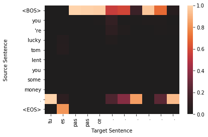
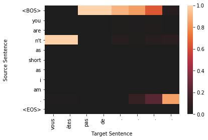
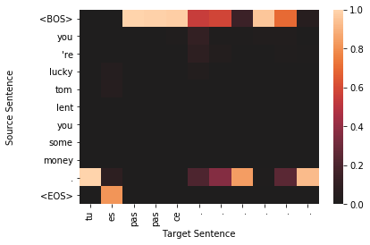
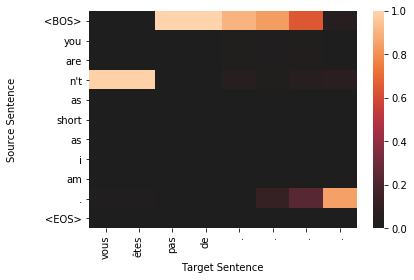


 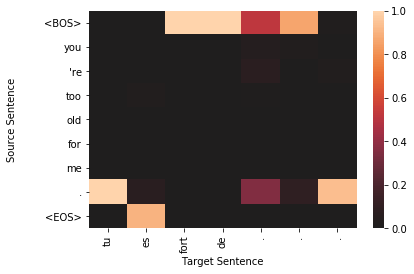
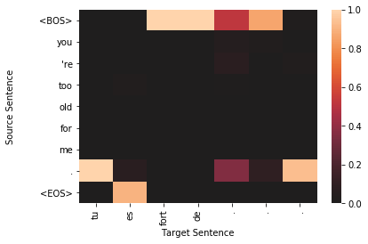


 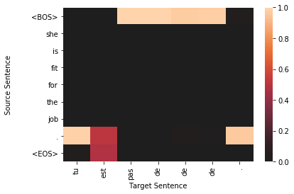
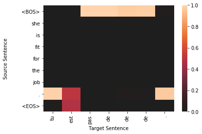
 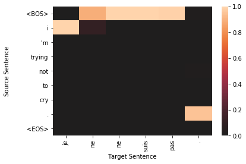
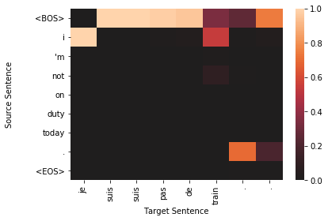
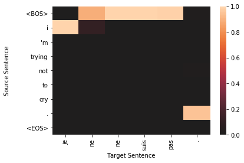
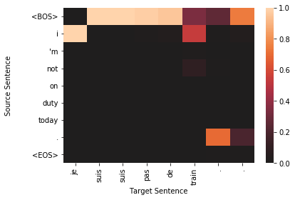


 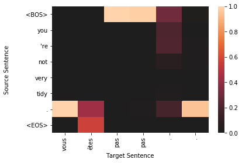
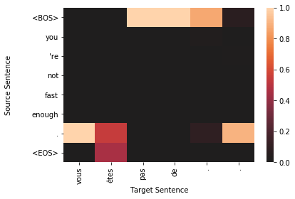
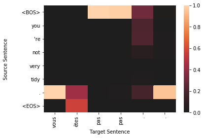
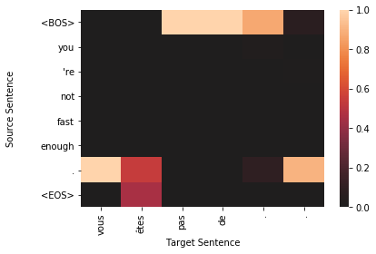


 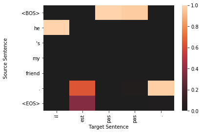
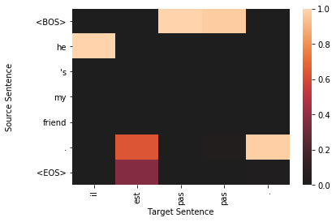


def get_source_sentence(vectorizer, batch_dict, index):
indices = batch_dict['x_source'][index].cpu().data.numpy()
vocab = vectorizer.source_vocab
return sentence_from_indices(indices, vocab)
def get_true_sentence(vectorizer, batch_dict, index):
return sentence_from_indices(batch_dict['y_target'].cpu().data.numpy()[index], vectorizer.target_vocab)
def get_sampled_sentence(vectorizer, batch_dict, index):
y_pred = model(x_source=batch_dict['x_source'],
x_source_lengths=batch_dict['x_source_length'],
target_sequence=batch_dict['x_target'])
return sentence_from_indices(torch.max(y_pred, dim=2)[1].cpu().data.numpy()[index], vectorizer.target_vocab)
def get_all_sentences(vectorizer, batch_dict, index):
return {"source": get_source_sentence(vectorizer, batch_dict, index),
"truth": get_true_sentence(vectorizer, batch_dict, index),
"sampled": get_sampled_sentence(vectorizer, batch_dict, index)}
def sentence_from_indices(indices, vocab, strict=True):
ignore_indices = set([vocab.mask_index, vocab.begin_seq_index, vocab.end_seq_index])
out = []
for index in indices:
if index == vocab.begin_seq_index and strict:
continue
elif index == vocab.end_seq_index and strict:
return " ".join(out)
else:
out.append(vocab.lookup_index(index))
return " ".join(out)
results = get_all_sentences(vectorizer, batch_dict, 1)
results
{'source': "i 'm not going to tell you how to do that .",
'truth': 'je ne vais pas te dire comment le faire .',
'sampled': 'je suis suis pas de de de . . .'}